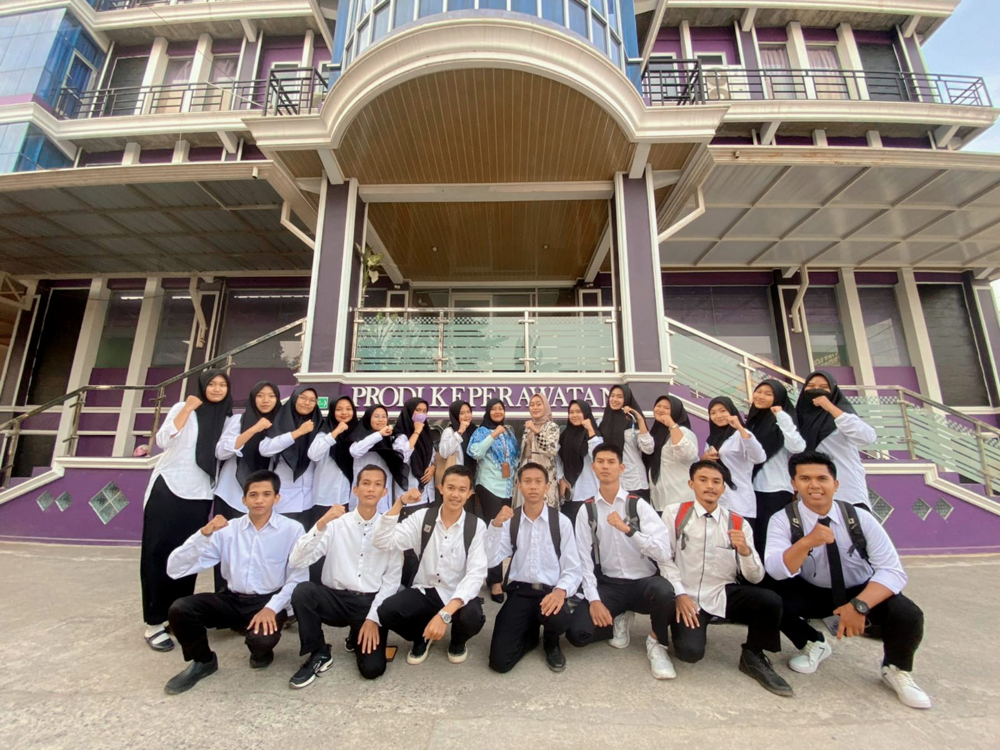

SELAMAT DATANG DI WEBSITE PENGADUAN SATGAS ANTI NARKOBA UAP
SATGAS ANTI NARKOBA UNIVERSITAS AISYAH PRINGSEWU
Satgas Anti Narkoba Universtas Aisyah Pringsewu Lampung. Jl. A Yani No. 1 A Tambak Rejo, Wonodadi, Kec. Pringsewu, Kabupaten Pringsewu, Lampung 35372

Agenda Terbaru
Sosialisasi Kesadaran Narkoba:
- Pembahasan dampak negatif penyalahgunaan narkoba.
- Edukasi tentang pencegahan dan rehabilitasi.
Pelatihan Kepemimpinan:
- Pengembangan keterampilan kepemimpinan bagi anggota Satgas.
- Strategi efektif dalam mengatasi tantangan kampus.
Aksi Sosial:
- Partisipasi dalam kegiatan sosial untuk memberikan dampak positif di lingkungan sekitar.
Diskusi dan Brainstorming:
- Sharing ide untuk meningkatkan efektivitas Satgas.
- Membahas strategi baru dalam menjalankan misi pencegahan.
Evaluasi Program:
- Mengevaluasi program yang sudah berjalan.
- Menerima masukan dan saran dari anggota.
Foto Bersama BNN Kabupaten Tanggamus
Foto Bersama dengan BNN kabupaten Tanggamus kak Ulfa arum Kartika,...
Read MoreKegiatan Pelatihan Satgas Anti Narkoba Universitas Aisyah Pringsewu
Pada Hari Senin tanggal 02 Oktober 2023 pukul 14.00 WIB,...
Read More